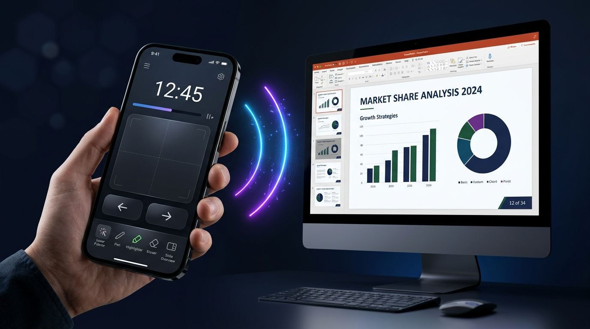

Run your PowerPoint presentations from your smartphone. Slide changes, laser pointer, drawing tools, touchpad and presentation timer — all in one app. A secure, low-latency connection over Wi-Fi.

No complicated setup. Turn your phone into a wireless presentation remote in minutes.
Start the QuickRemote server app on your Windows computer. A TLS certificate is created automatically and a QR code appears on the screen.
Open the QuickRemote app on your phone. PCs on the same network are listed automatically through mDNS, or scan the QR code.
Scan the QR code or enter the 6-digit PIN to connect securely. With the certificate fingerprint checked, start running your presentation right away.
QuickRemote gives you every tool you need to run your presentations flawlessly, in one app.
Move forward or back with a single tap. Start the show (F5), jump to a given slide, end it (ESC). The slide number and total appear on your phone in real time.
Control the laser pointer, pen, highlighter and eraser right from your phone. Change the pen color on the fly through COM automation.
Use your phone's screen as a precise trackpad. Full control with left/right click, drag and drop and adjustable mouse sensitivity.
A TLS/WSS encrypted connection, a random 6-digit PIN every session, certificate pinning and security code checks, brute-force protection (5 failed attempts → 60 s block), a QR code hidden after pairing and an authentication timeout.
PCs on the same network are listed automatically through mDNS (_quickremote._tcp). Scan a QR code, enter an IP by hand or quickly reconnect to one of the last 5 devices. Reconnects automatically when the connection drops.
Track how long your presentation runs in real time. Speaker notes, the current slide number and the slide count reach your phone instantly.
Install the server app on your Windows computer and the remote app on your phone. Pair instantly on the same Wi-Fi network.
Windows 10/11 · PowerPoint
WebSocket server + Win32 API
LibreOffice Impress · X11 and Wayland
WebSocket server + uinput
Android phones and tablets
Flutter · QR scanning · mDNS
Built on a reliable, high-performance architecture.
Cross-platform UI framework
Low-latency two-way communication
A secure channel with a self-signed certificate
SendInput API + PowerPoint automation
Automatic service discovery with _quickremote._tcp
A high-frequency binary format for mouse/laser data
Answers to the most common questions about QuickRemote.
QuickRemote turns your smartphone into a wireless presentation remote and touchpad. You can start PowerPoint presentations remotely, move slides forward and back, use drawing tools like the laser pointer, pen and highlighter, control the mouse and track your presentation time.
No. QuickRemote works entirely over your local Wi-Fi network, with no internet connection needed. It works as long as your computer and phone are on the same Wi-Fi network. All data stays on the local network; nothing is sent to outside servers.
All communication is encrypted with TLS/WSS. Every session gets a random 6-digit PIN, compared in constant time. After 5 failed PIN attempts the IP address is blocked for 60 seconds. A device that doesn't authenticate within 5 seconds is disconnected. The QR code carries the certificate fingerprint; on a first connection without it, you are asked to compare the security code on the PC screen before the PIN is sent. Once the first phone connects, the QR code and PIN are hidden.
The server app runs on Windows 10/11 (PowerPoint) and Linux (LibreOffice Impress). The remote app runs on Android devices. In Bluetooth mode your phone acts as a keyboard and mouse, with no app on the PC. Both apps are built with Flutter.
There are three ways to connect: (1) scan the QR code on the PC screen with your phone, (2) pick the PC from the list of PCs found on the network through mDNS, (3) enter the IP address and PIN by hand. You can also quickly reconnect to the last 5 devices you used.
QuickRemote controls PowerPoint's own drawing tools remotely. Pick the laser pointer (Ctrl+L), pen (Ctrl+P), highlighter (Ctrl+I) and eraser (Ctrl+E) from your phone. Thanks to COM automation you can also change the pen color on the fly.
Turn your phone into a professional presentation remote, touchpad and drawing tool. Completely free.